Sunset on Glass
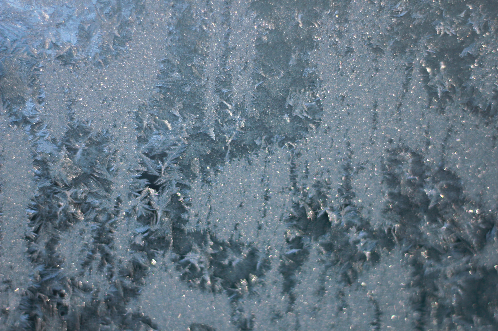
Ice
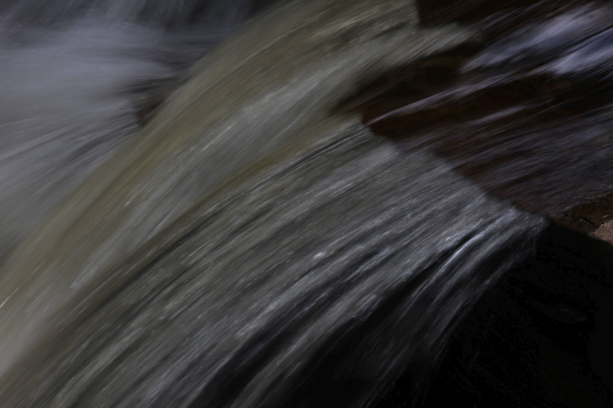
Slow Shutter Water
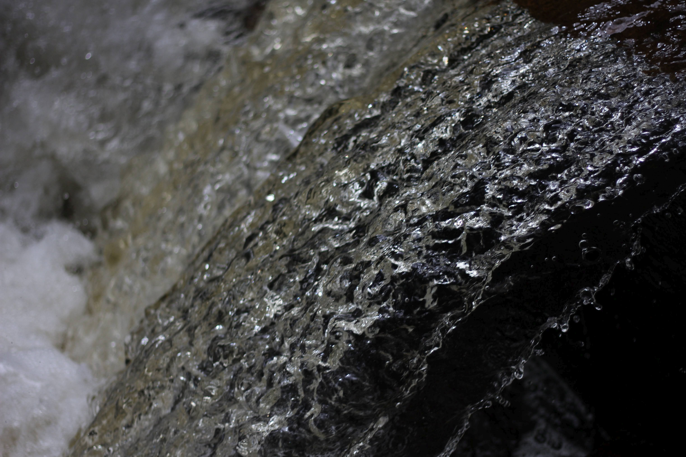
Fast Shutter Water
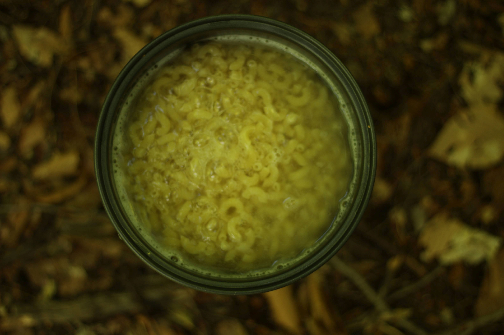
Mac n' LeavesOakCurtains
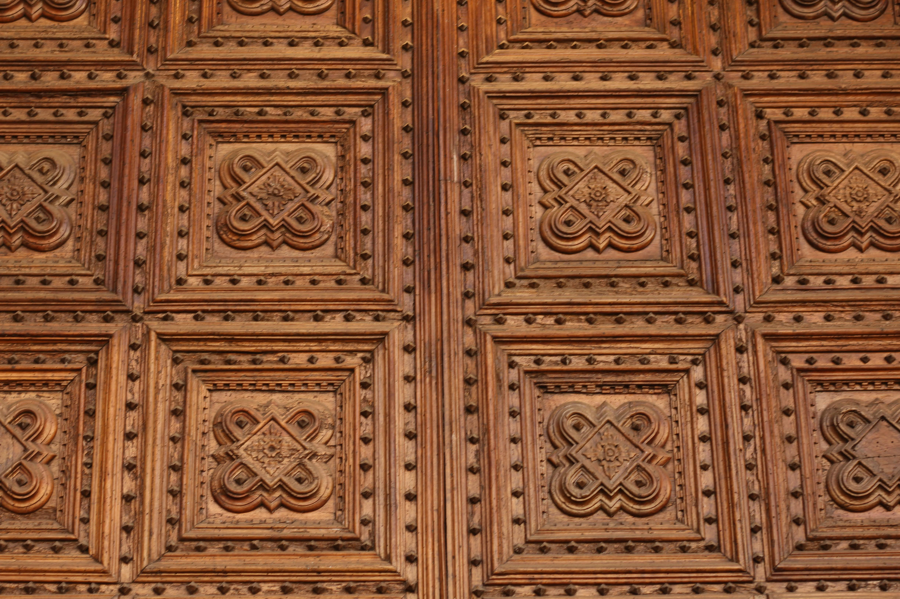
Oak Door
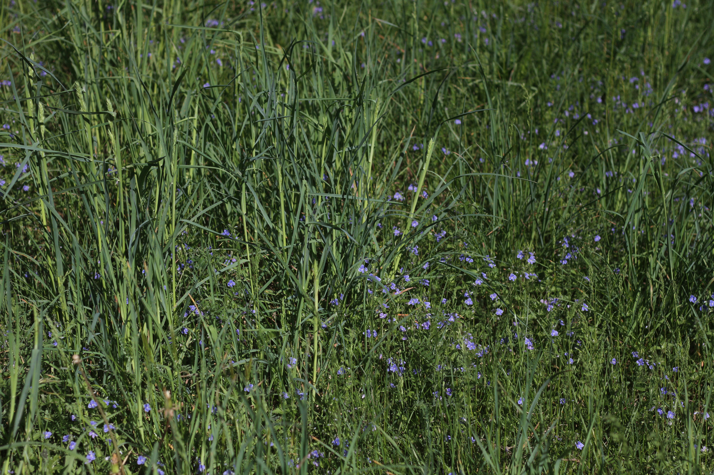
Grass
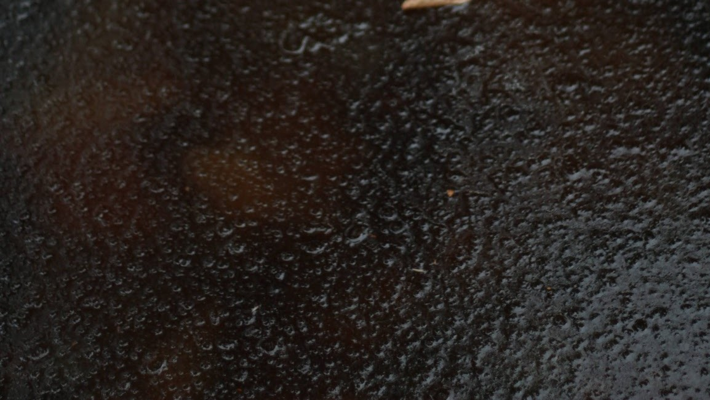
IceSidewalkPaper BirchWaterMoss and Pine
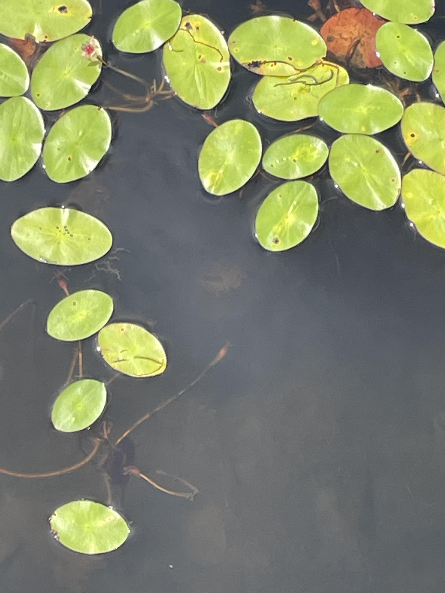
Lily PadCeilingRock & River
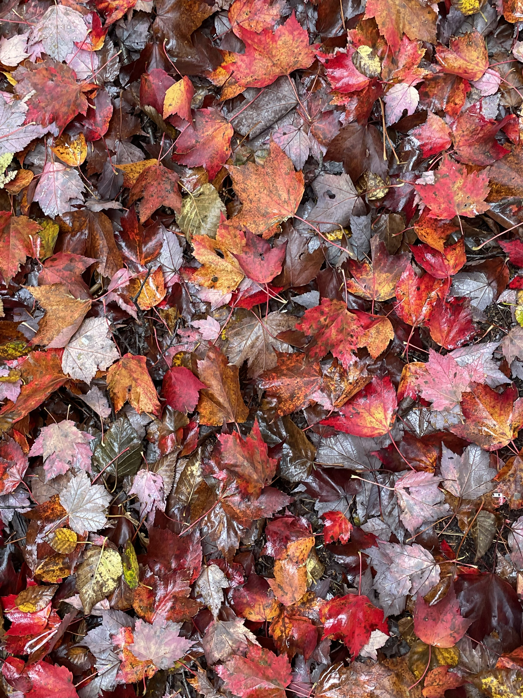
Wet Leaves
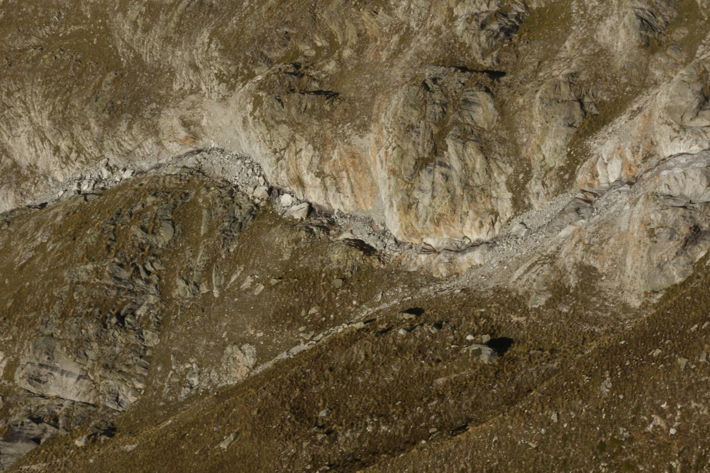
Mountainside RockOar Ripple Texture
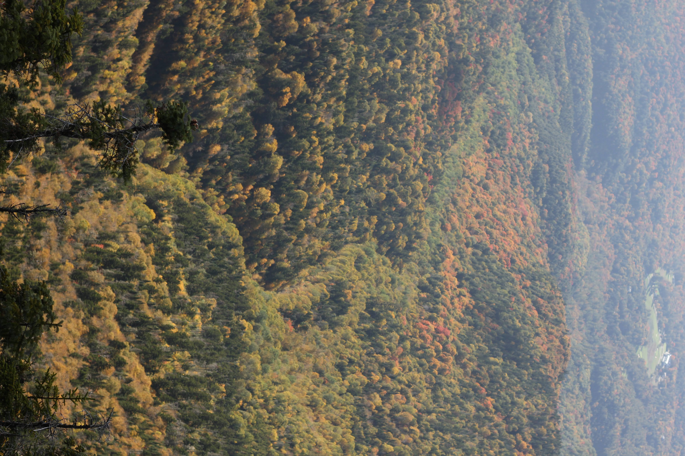
River of Green